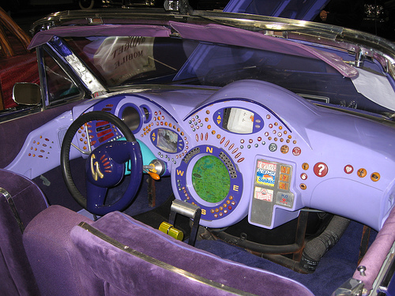

realtime™
Writing a simple realtime hardware monitor

real-time (adj)
(Electronics & Computer Science / Computer Science) denoting or relating to a data-processing system in which a computer receives constantly changing data, such as information relating to air-traffic control, travel booking systems, etc., and processes it sufficiently rapidly to be able to control the source of the data
The traditional realtime
- Real time os (RTOS)
- Known latency
- Known end to end processing time
- Controlled environment
Our definiton of realtime
- Non realtime os (linux, bsd, osx, windows)
- Completely random network topology
- Unknown end to end processing time
- Random hardware performance (HELLO AMAZON)
- Only websockets for now
It makes me feel

Proposal for a new definition of realtime
(Electronics & Computer Science / Computer Science) denoting or relating to a data-processing system in which a computer receives constantly changing data, such as information relating to air-traffic control, travel booking systems, etc., and processes it in an acceptable window of latency to control the source of data.
Sample app "realtime"
- Collect machine metrics on linux and osx
- Publish them to a central server
- Buffer and stream to client
Flow
- Collect metric
- Send to server
- Write to capped collection
- Write to historic store
- Stream data from capped collection to clients
Capped collection in MongoDB
| |
- Used as ring-buffer
- Fixed memory size
- FIFO
- Avoid additional IPC complexity
- Can be replicated
|
Server - Client protocol
ConnectionHandler.prototype.pause = function() {...}
ConnectionHandler.prototype.stop = function() {...}
ConnectionHandler.prototype.list = function() {...}
ConnectionHandler.prototype.subscribe = function() {...}
ConnectionHandler.prototype.unsubscribe = function() {...}
Do you need ack?
- UDP
- No order guarantee
- Possible packet loss
- Nowhere in the browser
- Possible to bridge with flash for javascript
- TCP/Websocket
- In order
- Packet delay can cause stalls
- SUCKS for realtime/gaming
The near future
- WebRTC
- Data channels
- Not yet 1.0 spec but in chrome
Data channels
| Services/Features |
SCTP |
TCP |
UDP |
| Connection-oriented |
yes |
yes |
no |
| Full duplex |
yes |
yes |
yes |
| Reliable data transfer |
yes |
yes |
no |
| Partial-reliable data transfer |
optional |
no |
no |
| Ordered data delivery |
yes |
yes |
no |
| Unordered data delivery |
yes |
no |
yes |
| Flow control |
yes |
yes |
no |
| Congestion control |
yes |
yes |
no |
| ECN capable |
yes |
yes |
no |
And more ...
Looking forward
- Data channel in webRTC (UDP Maybe)
- Flash-UDP bridge
- Native client
- Proper UDP support in the browser
Looking forward Sample App
- Extending Agent to be more generalized
- Agent upgradable transport (UDP-TCP-Websocket-HTTP)
- Finishing up complete app over time
- Adding more metrics and aggregated metrics